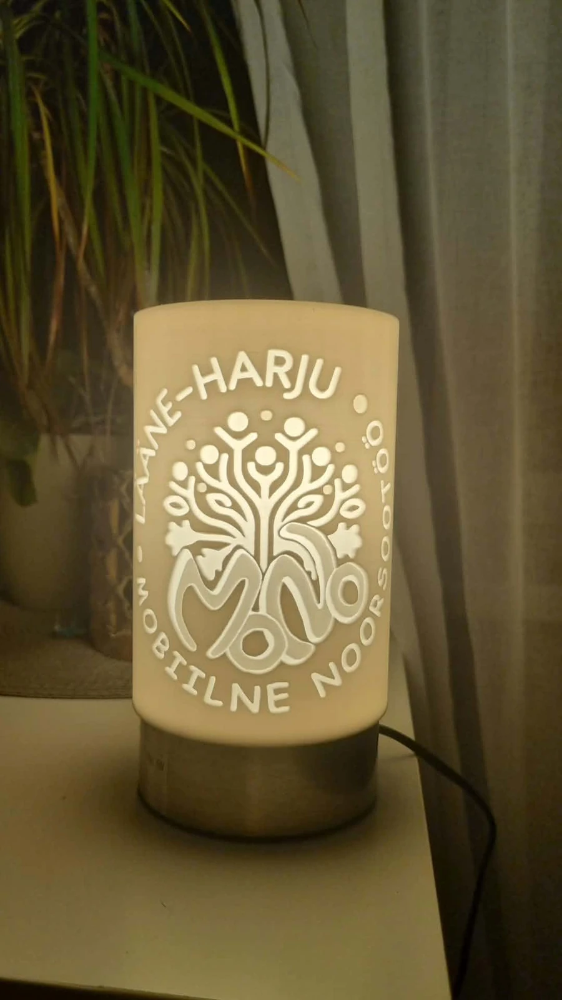
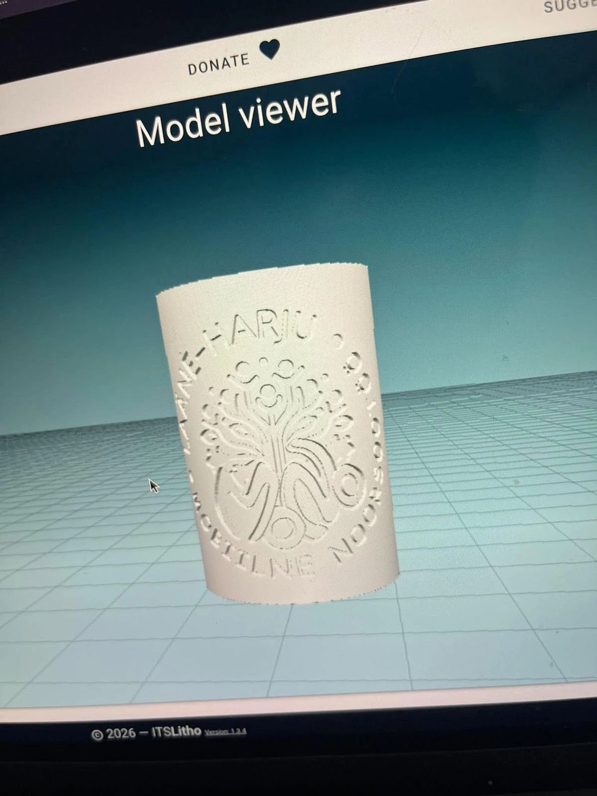
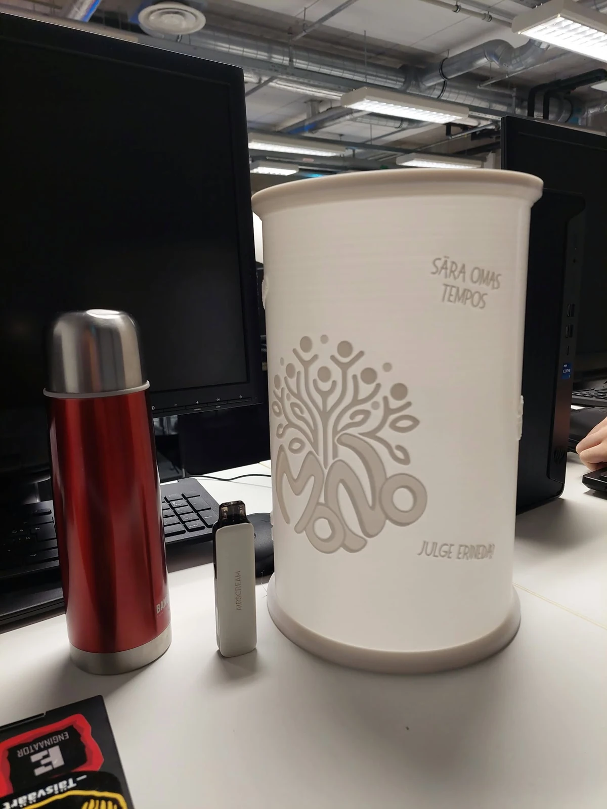
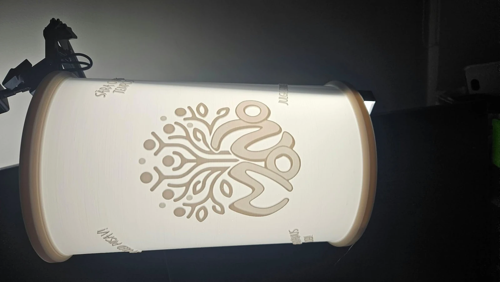
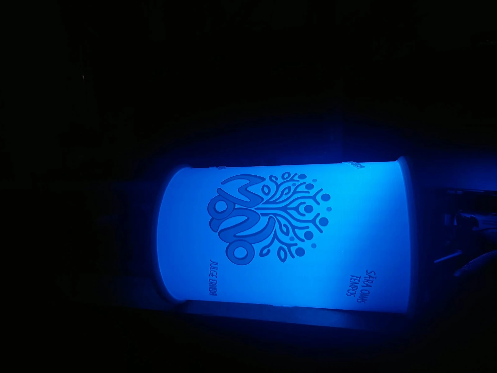
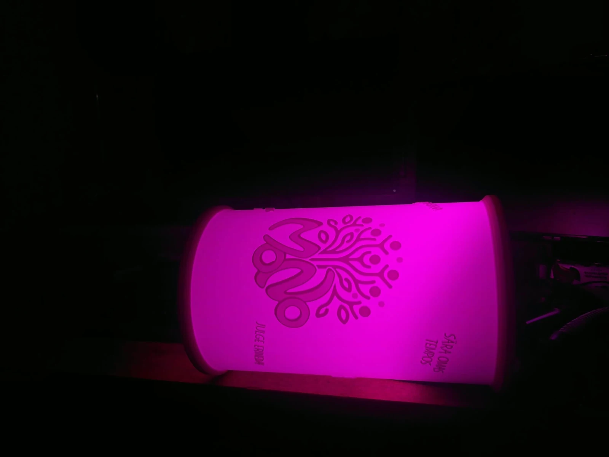

Rühm 1 · Valgusdisain ja 3D-print
Litofaanialamp
Lääne-Harju mobiilse noorsootöö jaoks loodud 3D-prinditud lamp, mille kuplil ilmub kujutis nähtavale tagantvalguses.


Probleem ja eesmärk
Lääne-Harju mobiilne noorsootöö ehk MoNo käib noortega kohtumas nende igapäevastes keskkondades. Uue algatusena vajas MoNo viisi, kuidas teha end üritustel märgatavaks ja anda vähemalt 13-aastastele noortele põhjus lähemale tulla ja vestlust alustada.
Rühm küsis tellijalt kirjalikus intervjuus, kus lampi kasutatakse, kuidas see võiks välja näha ning kui kiiresti peab seda saama üles seada. Vastustest kujunesid põhinõuded: lamp võiks olla pilkupüüdev, kaasaskantav ja vastupidav ning sellel olev MoNo kujutis peab jääma äratuntavaks.
Lahendus
Rühm kavandas silindrikujulise litofaaniakupli. Kujutise heledad ja tumedad alad tekivad prinditud seina paksuse erinevusest: õhemad kohad lasevad läbi rohkem valgust. Kupli 3D-mudeli loomisel kasutas rühm ItsLithot.
Esimene väike prooviprint aitas kontrollida, kas kujutis on valgustamisel loetav. Järgmine kuppel tehti suurem, et seda oleks kaugemalt näha. Värvimuutev pirn võimaldas proovida sama kujutist eri valgustes.
Arendusprotsess
-
10.–24. september
Ideest kasutajauuringuni
Esimesel kohtumisel valiti litofaania idee. Seejärel otsiti sobiv tellija ja koondati MoNo vastused kasutajauuringusse. Rühm kirjeldas kaht esialgset kasutajapersoonat: noort ja noorsootöötajat.
-
1.–8. oktoober
Disainibriif ja esimesed mudelid
Rühm täpsustas tellijaga disainiootusi, sõnastas nõuded ning kirjeldas tehnilisi valikuid. Esialgsete 3D-mudelitega võrreldi kuju ja kujutise paigutust.
-
15.–23. oktoober
Esimene prooviprint ja tagasiside
15. oktoobril saadi esimene silindrikujuline print. Seda valgustati olemasoleva lambiga ja võeti kaasa noorteõhtule, kus rühm jälgis noorte huvi. Noortelt eraldi tagasisidet ei kogutud. 23. oktoobril tutvustas rühm tööd vahenädalal.
-
5.–26. november
Suurem kuppel ja eri valgusvärvid
5. novembril otsustati silindrilise kuju juurde jääda ja teha umbes 25 cm kõrgune kuppel. Novembris valmis teine prooviprint, kus katsetati õhemat seina ning paksemaid kujutise ja teksti alasid. Rühm võrdles valgusvärve ning tegeles kuu lõpus lambi aluse kujundamisega.
Pildid ja joonised










Tulemus
Rühma kokkuvõtte järgi valmis puldiga juhitava värvimuutva pirniga prototüüp, mis töötab vooluvõrgust. Eri värvidega katsed näitasid, kui palju mõjutab valgus kupli üldmuljet ja kujutise nähtavust.
Akupangaga töötav USB-toide ja programmeeritavad valgusefektid jäid edasiarenduse võimalusteks. Noorteõhtu vaatlus andis esimese kasutuskogemuse, ent rühm ei mõõtnud, kui sageli lamp vestlusi algatada aitas.
Allikad. Rühma disainipäevik, disainibriif, tehniline kirjeldus ja projekti kokkuvõte. Fotod ja mudelivaated pärinevad rühma kokkuvõtte pildikaustast.